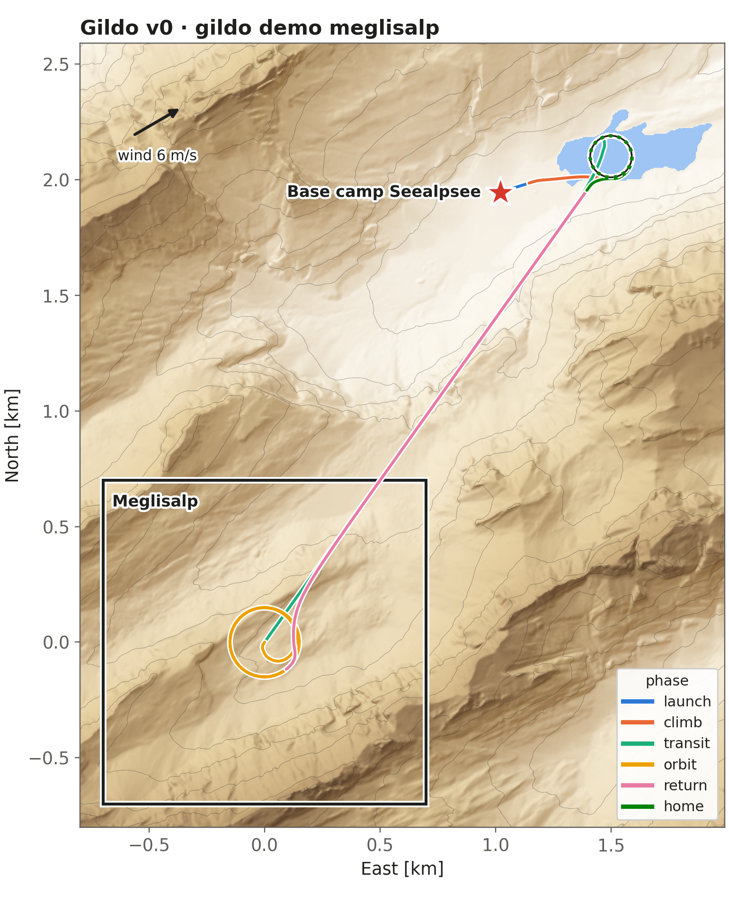
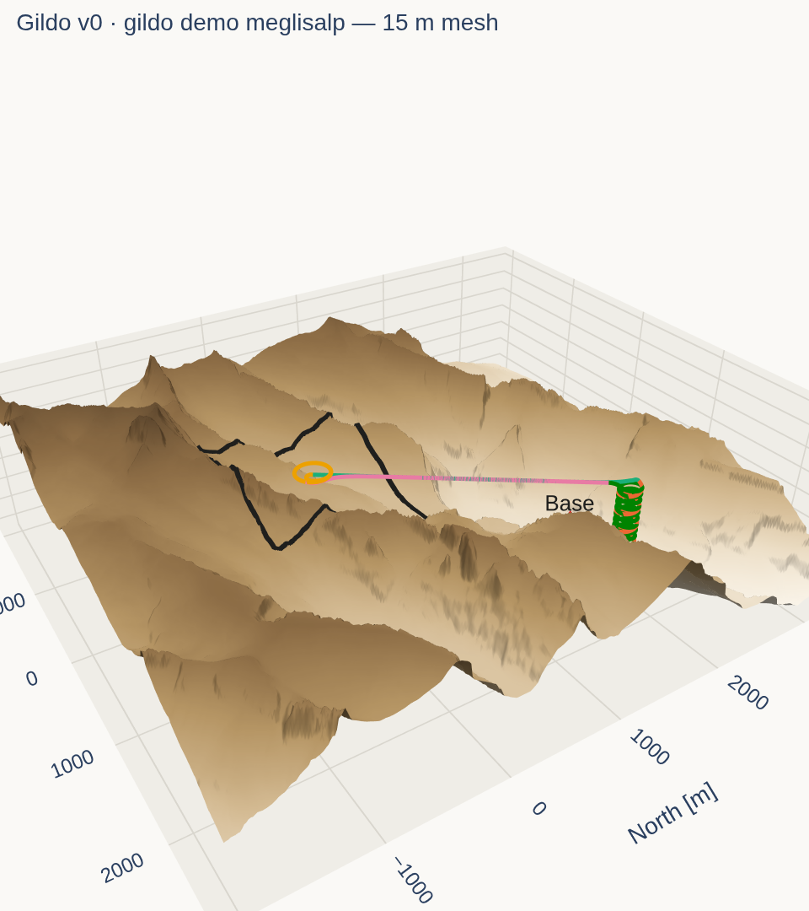
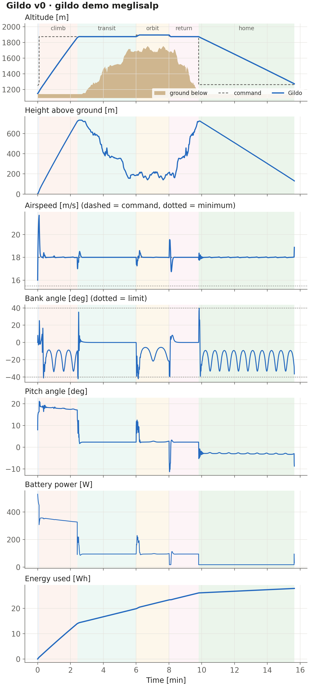
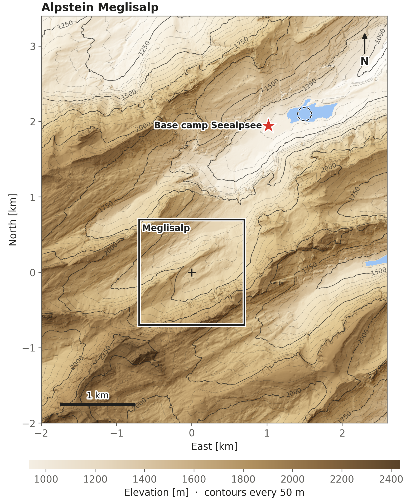
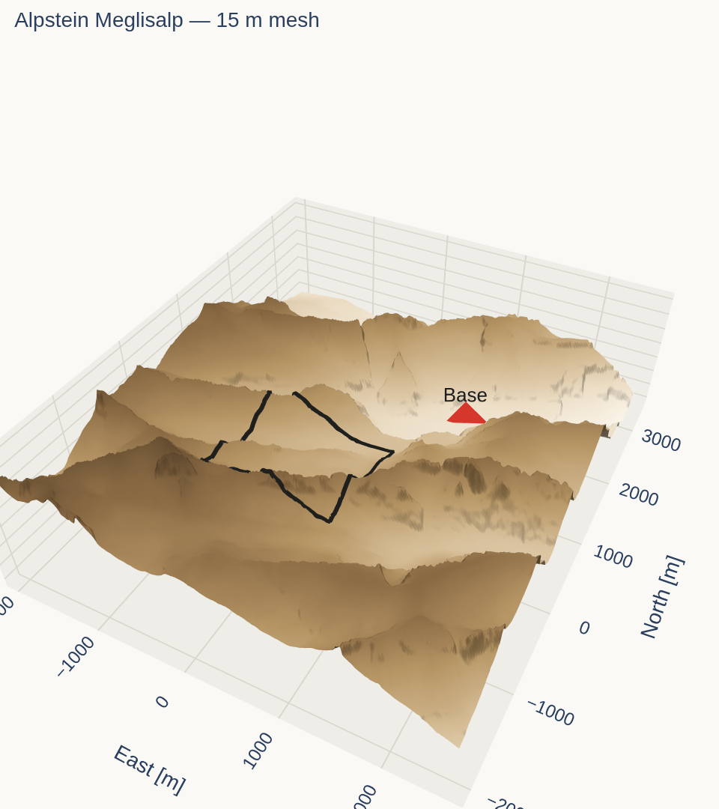
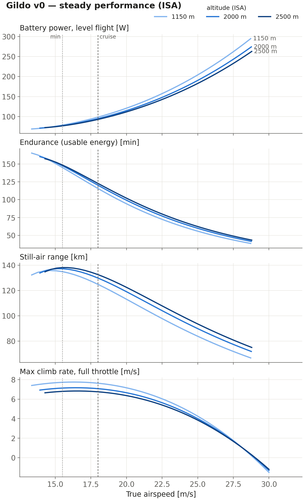

sar-gnc — results
Terrain-aware GNC for SAR in mountains · Stage 1: simulation environment
Gildo v0 · gildo demo meglisalp
run gildo_demo_meglisalp · 2026-11-05 13:21 UTC
- outcome
- mission complete at 15.6 min (simulated in 2.7 s)
- wind
- 6 m/s from 240° (steady)
- altitudes
- transit 1874 · target orbit 1895 · home hold 1262 m
- min height above ground
- 29 m (after launch)
- airspeed range
- 16.7–21.7 m/s
- max bank
- 42°
- energy used
- 27.8 Wh of 190 Wh usable
- phases
- climb 0.1′ → transit 2.4′ → orbit 6.0′ → return 8.0′ → home 9.8′ → done 15.6′



Alpstein Meglisalp
run alpstein_meglisalp · 2026-11-05 13:21 UTC
- site
- alpstein · origin 47.2493 N, 9.3800 E
- map
- 4.6 × 5.4 km · 921 × 1081 @ 5 m
- base
- Base camp Seealpsee · E 1020 N 1945 · 1147 m
- search region
- Meglisalp · 1.96 km²
- search elevation
- 1515–2221 m
- slope median / p90
- 32° / 57°
- source
- swissalti3d 2 m


Gildo v0 — aircraft
run gildo_v0_performance · 2026-11-05 13:21 UTC
- mass
- 3.20 kg (airframe 1.05, battery 0.90, propulsion 0.30, avionics 0.30, payload 0.65)
- wing
- span 2.00 m · area 0.56 m² · AR 7.1 · loading 56 N/m²
- battery
- 224 Wh (85% usable) · hotel 18 W
- stall (1 g)
- 12.4 m/s @ 1150 m · 12.9 m/s @ 2000 m · 13.2 m/s @ 2500 m
- speeds
- min 15.5 · cruise 18 · max level 28.8 m/s @ 2000 m
- cruise @ 2000 m
- 95 W · 120 min · 130 km
- best endurance
- 160 min at 13.9 m/s
- best range
- 137 km at 15.2 m/s
- max climb
- 7.7 m/s @ 1150 m · 7.2 m/s @ 2000 m · 6.8 m/s @ 2500 m
- ceiling (0.5 m/s)
- > 6000 m ISA (no motor power lapse modelled)
- full-throttle current
- 20 A (limit 40 A)
- turn radius
- 57 m at 30° / 39 m at 40° (cruise) · min 29 m
- trim @ cruise
- α 2.4° · δe 0.5° · throttle 0.63
- mode: phugoid
- ωn 0.70 rad/s · ζ 0.18
- mode: short period
- ωn 12.09 rad/s · ζ 0.47
- mode: dutch roll
- ωn 3.06 rad/s · ζ 0.10
- mode: spiral
- doubles in 34.5 s
- mode: roll
- halves in 0.1 s
